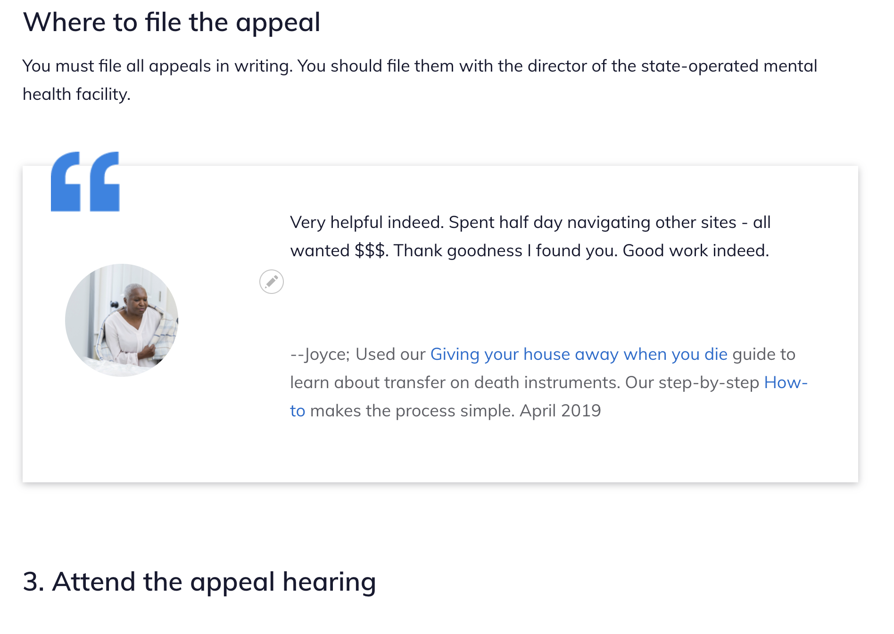

Testimonials Content Type¶
The testimonials content type is used:
- to store positive stories that can be highlighted on the home page and (eventually) within content.

Todo
Add fields that will make it easier to track and use: date of feedback as a field, legal issue(s), feedback source.
When rendered on the home page:

When embedded within legal content:
Todo
Style work is needed before these can be used in legal content.